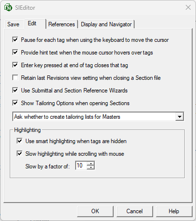

This command can only be executed from the SI Editor's Tools menu.
The Edit tab in the Options window allows the customization of the SI Editor's configuration settings.

- Pause for each tag when using the keyboard to move the cursor - Allows the use of arrow keys to move through hidden tags as if they were visible. The Status Bar at the bottom of the screen shows which hidden tag the cursor is currently within.
- Provide hint text when the mouse cursor hovers over tags - Displays helpful tooltip information when you hover over tagged text, providing useful hints during the editing process. Disable this option if these hints are distracting while editing.
-
Enter key pressed at end of tag closes that tag - Adds a new line after the ending tag when you press Enter. To add a line before the ending tag, press Shift+Enter. This improves editing efficiency, particularly for Ordered Lists. Disable to revert to the previous functionality. - Retain last Revisions view setting when closing a Section file - Retains the last revisions viewing preference, regardless of the Job or Master's default configuration set within the SpecsIntact Explorer's File menu > Properties > Options tab to Use Revisions.
- Use Submittal and Section Reference Wizards - Controls whether you want to automatically open the Submittal Wizard or Section Reference Wizard to assist with the insertion of Submittals or Section References within the Section.
- Show Tailoring Options when opening Sections - Automatically opens the Tailoring Options window each time a Section is opened.
- FOR MASTER COORDINATORS USE ONLY:
- Always create tailoring lists for Masters - Automatically generates Tailoring lists from the Master specifications without asking.
- Ask whether to create tailoring lists for Masters - Automatically asks before generating missing tailoring lists.
- Never create tailoring lists for Masters - Will not prompt or generate the Master tailoring list. Master preparers attempting to add new Tailoring Options will not have access to the Tailoring Options already in use.
- Highlighting - Provides two options to improve editing efficiency to ensure accurate text selection by including hidden tags, while providing for more precise selections by optimizing the scroll speed.
- Use smart highlighting when tags are hidden - Ensures that any selected text automatically includes its associated tags and spaces. This makes editing more accurate and efficient, even when tags aren't visible. We recommend keeping this feature enabled for optimal performance.
- Slow highlighting when scrolling with mouse - Enables more precise and efficient text selection when using the mouse. This directly contributes to improved editing efficiency by enhancing your control over highlighting.
Standard Windows Commands
 The OK button will execute and save the selections made.
The OK button will execute and save the selections made.
 The Cancel button will close the window without recording any selections or changes entered.
The Cancel button will close the window without recording any selections or changes entered.
 The Help button will open the Help Topic for this window.
The Help button will open the Help Topic for this window.